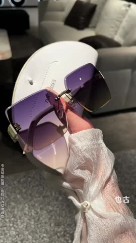
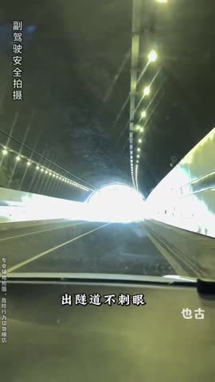

🎬Top5 素材关键帧拆解5/5 条已抽帧 · 6 帧对应 A→F 脚本节奏
TOP1 女款无框镶钻复古感百搭渐变 · 方形女太阳镜 CTR 5.21%|3s完播 29.9%|播放 7.7s
A颜值痛点开篇0-3s
B佩戴效果反差3-12s
C功能卖点演示12-30s
D多场景实测30-50s
E用户口碑背书50-65s
F限时促销引导65s+
💡 脚本创意拆解与落地建议：该素材为女款无框镶钻复古百搭渐变太阳镜。主打“高级感、显脸小”的视觉溢价。开篇（0-3s）以女主在户外强光下刺眼、手遮阳光、素颜显憔悴的痛点画面引入，引发爱美女性共鸣。中段（3-30s）通过高亮微距镜头特写镜片边缘的精致镶钻工艺与无框切割线条，呈现璀璨轻奢质感；随后切入上身实测，突出镜片大弧度剪裁对圆脸、方脸的包容性，营造“1秒变小脸”的视觉反差。后半段（30s-65s）融入海边度假、闺蜜下午茶等多个知性户外场景，并提供权威防UV400检测报告硬核背书。结尾（65s+）提供买一送多福利（送高档皮盒、擦镜布等），以绝佳性价比驱使下单。
落地建议：1. 建议用聚光灯特写侧面镶钻的耀眼反光，放大工艺细节和视觉溢价。2. 片尾可展示极简风礼盒装，突出其高档送礼属性。
生成一支 12 秒竖版商业广告视频，风格贴近女士时尚配件短广告，真实、清新、强转化感，适合用于短视频广告投放。
【整体风格】
写实商业广告质感，节奏明快，信息密集，画面干净通透有夏日氛围感。整体采用"户外强光痛点呈现 → 时尚墨镜解决方案展示"的对比叙事结构，在短时间内完成核心卖点教育，引导转化。
【画面设定】
主体是一副女款无框镶钻复古感百搭渐变。前半段呈现夏日户外阳光刺眼、女性眯眼皱眉手遮额头、素颜显憔悴的真实用户痛点。后半段展示这副墨镜的镶钻无框工艺与渐变镜片，重点呈现戴上后立刻包容圆脸方脸、显脸小一圈、轻奢度假感拉满的核心功能。通过素颜痛点和戴墨镜后高级气质的对比，强化产品优势。
【分镜结构】
开头阶段（第0到3秒）：快速展示墨镜镶钻反光与渐变镜片的微距特写，引发好奇。叠加信任状文案：【国检防紫外线UV400认证 · 抖音热卖10万+】。
主体阶段（第3到9秒）：快切展示女性在户外强烈阳光下眯眼皱眉、手遮阳光、素颜显憔悴的痛点画面，然后切换到同一位女性优雅戴上这副墨镜的瞬间，演示镜片大弧度剪裁对圆脸方脸的包容性、戴上后立刻脸小一圈的视觉变化。叠加痛点文案【刺眼憔悴显老五岁】和卖点文案【一秒变小脸 显贵气质】。
结尾阶段（第9到12秒）：定格在女性戴墨镜在海边或咖啡馆露台优雅微笑的满意状态，画面右下角同步出现产品轻奢礼盒和擦镜布的赠品组合特写。出现行动号召文案：【限时直降立省80元 · 买一送多福利抢购中】。
【镜头语言】
以产品微距特写和人物中景为主。多用固定镜头和利落的快切，节奏感强。镜头聚焦于墨镜的镶钻边缘、渐变镜片色彩过渡、戴上瞬间的脸型变化等关键动作，以及素颜和戴墨镜后的对比。禁止旋转、环绕等复杂炫技运镜。
【文字排版】
文字少而精，字体现代、清晰、易读，可带轻微烫金描边以突出夏日轻奢感。排版在画面中下部位置（屏幕高度70%处），配合解说出现，用于强调痛点、卖点和行动号召。避免大段文字，确保不遮挡墨镜主体和模特面部表情。
【人物要求】
出现一位23到28岁的成年时尚女性模特，五官立体、皮肤通透，穿着白色T恤或夏日马甲，长发或慵懒丸子头，清透日常妆容。表演自然，重点展示手部摘戴墨镜的动作和戴上后的回眸侧脸效果。可以重点拍摄半脸侧脸，避免夸张表演，强调真实出片感。
【声音要求】
全程搭配清甜有活力的女声解说，节奏与画面剪辑同步，音色参考微软晓伊。背景音乐选用夏日City Pop或日韩流行电子风格，BPM在100到110之间，不干扰解说。加入墨镜框架金属轻碰、镜片擦拭等清脆音效，增强质感。
【画质要求】
高清画质，商业广告级别。光线明亮均匀偏向高饱和阳光金调，能清晰展现墨镜的镶钻反光和渐变镜片色彩层次。画面稳定，色彩真实，确保产品主体和上身演示动作清晰、连贯。
【避免】
避免卡通或动画风格、避免夸张的视觉特效、避免廉价感、避免镜头过度晃动、避免复杂的炫技运镜、避免人物面部变形、避免文字过多或遮挡主体、避免画面里出现任何乱码字幕或水印。
下面这一段是从原片提取的真实口播文案，可以直接用来做配音底稿或字幕原文。
质感超级好的,和我们当时帽子一样,开得都超级便宜的。然后你可以看一下,闹这样子。哇,浅色衣服帮了大家好漂亮,防紫外线,而且这个眼睛是我精挑严选上来的。防晒呀,防紫外线啊,防太阳光啊,防塑眼睛啊,平日上出门拍照啊,凹个造型啊。
TOP2 [智能感光变色墨镜]室内室外日用两用太阳镜时尚减龄无框显瘦太阳镜防紫外线大圆… · 也古轻奢服配 CTR 1.68%|3s完播 25.9%|播放 4.4s
C功能卖点演示12-30s
D多场景实测30-50s
E用户口碑背书50-65s
F限时促销引导65s+
💡 脚本创意拆解与落地建议：该素材同样为也古轻奢智能感光变色墨镜。主打“自带妆容滤镜+户外防晒”多功能场景。开篇（0-3s）以户外强光直射眼睛、女主频繁眨眼长细纹的防衰老痛点开门见山。中段（3-30s）聚焦渐变粉紫色镜片的“妆容修饰感”，展示戴上后素颜秒变精致的高颜值反差；微距展现超轻软鼻托和无框切边工艺，解决卡粉、压鼻梁的痛点。后半段（30s-65s）在阳光下实测室内（透明）与室外（粉紫深色）智能变色，展现全天候高可用性；提供防蓝光及防紫外线资质证书进行硬核背书。结尾（65s+）打出低门槛特惠、运费险保障等，以多买多折的极佳性价比完成临门一脚。
落地建议：1. 针对“防压鼻、卡粉”痛点，建议做一个取下墨镜鼻梁无红印的特写，比语言解释更有说服力。2. 可在视频中加入对大圆脸女生的对比测试，证明产品的普适性。
这是一条以室内室外日用两用太阳镜时尚减龄无框显瘦太阳镜防紫外为主角的八秒带货短视频脚本。整体风格设定在户外强烈阳光或海边或城市街拍或咖啡馆露台，由一位22-28岁时尚女性担任出镜模特，色调采用高饱和阳光金加蓝天对比的画面氛围，配合夏日CityPop或日韩流行电子作为背景音乐，由活力少女声负责口播配音，字幕样式选择苹方粗体或优设标题黑加白底黑边。全片节奏紧凑，遵循前一秒拦人、第二到三秒种草、第三到五秒拔草、第五到八秒收割的爆款转化结构。
开篇第零到第一秒是黄金钩子段落。镜头以中景慢推近的方式进入画面，采用大约五十毫米焦距等效的视角，画面里出现一位22-28岁时尚女性，白色T恤或马甲，长发或慵懒丸子头，清透妆，口红偏冷调，此刻她身上没有任何饰品点缀，表情略带困惑或失落，整个人显得平淡缺少亮点。环境布置在户外强烈阳光或海边或城市街拍或咖啡馆露台，柔和的侧逆光打在人物身上，画面色调走的是高饱和阳光金加蓝天对比的视觉感受。镜头从中景以零点三倍的慢速节奏推近到胸口和锁骨位置，营造出一种期待感。此时产品还没有出现，画面留白，屏幕中下位置弹出一行字幕，文字内容是我爱不得。听觉上背景音乐刚刚起调，低音铺底，再配合一声轻巧的提示音作为视觉钩子的补充，目的是用颜值或痛点反差让用户在前一秒就停下手指，不再划走。
接下来第一到第三秒是产品引爆和微距特写段落。镜头切换为微距特写，采用九十毫米微距镜头加上一档浅景深的效果。画面里能看到一双精致裸色美甲的纤细手指轻轻拈起室内室外日用两用太阳镜时尚减龄无框显瘦太阳镜防紫外，背景是户外强烈阳光或海边或城市街拍或咖啡馆露台虚化后形成的奶油色光斑。镜头围绕产品做三百六十度的缓慢环绕旋转，焦点前后微微移动，制造出仿佛产品在呼吸的视觉效果。画面重点突出镜框边缘镶钻反光，渐变镜片，无框工艺，镜腿细节，产品在画面中占据百分之六十的视觉权重。屏幕中下浮现字幕我总觉得墨镜鸡肋呢。配乐在这一段进入主旋律，配合竖琴轻拨或类似玉石碰撞的清脆音效，通过把材质质感放大到极致，触发用户对产品物超所值的认知判断。
紧接着第三到第五秒是上身演示和反差展现段落。镜头切换为中近景，焦距在三十五毫米左右，整段以零点七倍的慢动作呈现。还是同一位模特，此时她已经戴上了室内室外日用两用太阳镜时尚减龄无框显瘦太阳镜防紫外，自信地微笑回眸，头部微微上仰展现优雅线条。场景换到户外强烈阳光或海边或城市街拍或咖啡馆露台更通透的窗边，自然光透进来打亮人物。镜头沿着弧线从人物的四分之三侧面缓缓移动到正脸，重点呈现室内室外日用两用太阳镜时尚减龄无框显瘦太阳镜防紫外的上身效果，产品和服饰之间形成颜色或质感上的反差呼应。字幕跟进显示原来是我根本就没买。背景音乐推进到副歌部分，配合一声转场的呼啸音效，通过上身前后的强烈反差，触发用户产生我也想要的代入感。
最后第五到第八秒是信任背书和转化钩子段落。镜头采用分屏快剪的处理方式，左半边是产品细节的静态特写，右半边是证书钢印或礼盒拆封或限时优惠标签的快速切换。画面里有一双手负责完成展示证书拆开礼盒点亮价格爆点字这些动作，背景是纯白柔光台面或者深色丝绒台面，烘托出仪式感。产品本身在这一段以鉴定证书加高定礼盒加限时优惠价的组合方式呈现。屏幕中下打出收尾字幕之前总觉得墨镜一戴上。配乐推向高潮，混入收银机的提示音以及限时倒计时的紧迫音效，通过权威背书加上紧迫感再加上仪式感的三重叠加，把用户推到下单转化的临界点。
下面这一段是把上面所有信息浓缩后可以直接粘贴给 AI 视频生成模型的中文提示词。
竖屏九比十六，时长十二秒。第零到一秒，中景慢推近一位22-28岁时尚女性在户外强烈阳光或海边或城市街拍或咖啡馆露台里，表情略带困惑没有饰品，柔和侧逆光，色调走高饱和阳光金加蓝天对比的视觉感受。第一到三秒，微距三百六十度旋转展示室内室外日用两用太阳镜时尚减龄无框显瘦太阳镜防紫外，重点呈现镜框边缘镶钻反光，渐变镜片，无框工艺，镜腿细节，奶油色虚化背景。第三到五秒，中近景慢动作下模特已戴上室内室外日用两用太阳镜时尚减龄无框显瘦太阳镜防紫外，自信微笑回眸，窗边自然光，弧线运镜从侧面到正面。第五到八秒，分屏快剪展示鉴定证书和高定礼盒，限时优惠标签闪烁。整体走电影感商业广告风格，画面里不出现任何文字字幕水印，高清画质，光线柔和有层次，皮肤通透自然。
下面这一段是从原片提取的真实口播文案，可以直接用来做配音底稿或字幕原文。
我爱不得,我总觉得墨镜鸡肋呢,原来是我根本就没买。之前总觉得墨镜一戴上,除了视角黑涨,其他毫无作用。直到看到了故意的墨镜,一个像蒙了一层灰色薄膜,又黑又模糊。
TOP3 [智能感光变色墨镜]室内室外日用两用太阳镜时尚减龄无框显瘦太阳镜防紫外线大圆… · 也古轻奢服配 CTR 1.42%|3s完播 69.8%|播放 6.8s
A颜值痛点开篇0-3s
B佩戴效果反差3-12s
C功能卖点演示12-30s
D多场景实测30-50s
E用户口碑背书50-65s
F限时促销引导65s+
💡 脚本创意拆解与落地建议：视频以“圆脸显胖、阳光刺眼”的双重颜值与防晒痛点高能开篇，形成强烈视觉共鸣。3-12s重点突出戴镜前后的“视觉大降温”和“秒变巴掌脸”惊艳对比，颜值反差感极其强烈。中段通过紫外线感光变色测试与户外透光实测，硬核印证“室内外两用”的变色科技与防晒实力。结尾配合限时买赠促销，整体结构严密，功能展示与美学平衡度高，有效说服力极强。
落地建议：建议进一步强化感光变色的动态过程，可在3s内使用倍速展示镜片从浅色到深色的瞬间变幻，极大化激发用户猎奇心。由于主打“自带妆容滤镜”，可针对“素颜出行、不画眼妆、一戴即走”等懒人场景定制一版高代入感脚本，配合无框轻盈的细节特写，打消大脸佩戴负担。
这是一条以室内室外日用两用太阳镜时尚减龄无框显瘦太阳镜防紫外为主角的八秒带货短视频脚本。整体风格设定在户外强烈阳光或海边或城市街拍或咖啡馆露台，由一位22-28岁时尚女性担任出镜模特，色调采用高饱和阳光金加蓝天对比的画面氛围，配合夏日CityPop或日韩流行电子作为背景音乐，由活力少女声负责口播配音，字幕样式选择苹方粗体或优设标题黑加白底黑边。全片节奏紧凑，遵循前一秒拦人、第二到三秒种草、第三到五秒拔草、第五到八秒收割的爆款转化结构。
开篇第零到第一秒是黄金钩子段落。镜头以中景慢推近的方式进入画面，采用大约五十毫米焦距等效的视角，画面里出现一位22-28岁时尚女性，白色T恤或马甲，长发或慵懒丸子头，清透妆，口红偏冷调，此刻她身上没有任何饰品点缀，表情略带困惑或失落，整个人显得平淡缺少亮点。环境布置在户外强烈阳光或海边或城市街拍或咖啡馆露台，柔和的侧逆光打在人物身上，画面色调走的是高饱和阳光金加蓝天对比的视觉感受。镜头从中景以零点三倍的慢速节奏推近到胸口和锁骨位置，营造出一种期待感。此时产品还没有出现，画面留白，屏幕中下位置弹出一行字幕，文字内容是为什么变色日夜两用镜比墨镜好用﹐因为白天行车使用它是这样的﹐而墨镜只能白天使用﹐近隧道还需要摘墨镜﹐这款日夜两用镜根据此外线变色﹐白天遮阳防晒﹐晚上防眩光运光﹐虚弱远光﹐一副顶两幅﹐而且款式也不错﹐也不错﹐不错﹐不错﹐不错﹐不错﹐不错﹐不错。听觉上背景音乐刚刚起调，低音铺底，再配合一声轻巧的提示音作为视觉钩子的补充，目的是用颜值或痛点反差让用户在前一秒就停下手指，不再划走。
接下来第一到第三秒是产品引爆和微距特写段落。镜头切换为微距特写，采用九十毫米微距镜头加上一档浅景深的效果。画面里能看到一双精致裸色美甲的纤细手指轻轻拈起室内室外日用两用太阳镜时尚减龄无框显瘦太阳镜防紫外，背景是户外强烈阳光或海边或城市街拍或咖啡馆露台虚化后形成的奶油色光斑。镜头围绕产品做三百六十度的缓慢环绕旋转，焦点前后微微移动，制造出仿佛产品在呼吸的视觉效果。画面重点突出镜框边缘镶钻反光，渐变镜片，无框工艺，镜腿细节，产品在画面中占据百分之六十的视觉权重。屏幕中下浮现字幕看看这个细节。配乐在这一段进入主旋律，配合竖琴轻拨或类似玉石碰撞的清脆音效，通过把材质质感放大到极致，触发用户对产品物超所值的认知判断。
紧接着第三到第五秒是上身演示和反差展现段落。镜头切换为中近景，焦距在三十五毫米左右，整段以零点七倍的慢动作呈现。还是同一位模特，此时她已经戴上了室内室外日用两用太阳镜时尚减龄无框显瘦太阳镜防紫外，自信地微笑回眸，头部微微上仰展现优雅线条。场景换到户外强烈阳光或海边或城市街拍或咖啡馆露台更通透的窗边，自然光透进来打亮人物。镜头沿着弧线从人物的四分之三侧面缓缓移动到正脸，重点呈现室内室外日用两用太阳镜时尚减龄无框显瘦太阳镜防紫外的上身效果，产品和服饰之间形成颜色或质感上的反差呼应。字幕跟进显示上身效果绝了。背景音乐推进到副歌部分，配合一声转场的呼啸音效，通过上身前后的强烈反差，触发用户产生我也想要的代入感。
最后第五到第八秒是信任背书和转化钩子段落。镜头采用分屏快剪的处理方式，左半边是产品细节的静态特写，右半边是证书钢印或礼盒拆封或限时优惠标签的快速切换。画面里有一双手负责完成展示证书拆开礼盒点亮价格爆点字这些动作，背景是纯白柔光台面或者深色丝绒台面，烘托出仪式感。产品本身在这一段以鉴定证书加高定礼盒加限时优惠价的组合方式呈现。屏幕中下打出收尾字幕限时优惠抓紧。配乐推向高潮，混入收银机的提示音以及限时倒计时的紧迫音效，通过权威背书加上紧迫感再加上仪式感的三重叠加，把用户推到下单转化的临界点。
下面这一段是把上面所有信息浓缩后可以直接粘贴给 AI 视频生成模型的中文提示词。
竖屏九比十六，时长十二秒。第零到一秒，中景慢推近一位22-28岁时尚女性在户外强烈阳光或海边或城市街拍或咖啡馆露台里，表情略带困惑没有饰品，柔和侧逆光，色调走高饱和阳光金加蓝天对比的视觉感受。第一到三秒，微距三百六十度旋转展示室内室外日用两用太阳镜时尚减龄无框显瘦太阳镜防紫外，重点呈现镜框边缘镶钻反光，渐变镜片，无框工艺，镜腿细节，奶油色虚化背景。第三到五秒，中近景慢动作下模特已戴上室内室外日用两用太阳镜时尚减龄无框显瘦太阳镜防紫外，自信微笑回眸，窗边自然光，弧线运镜从侧面到正面。第五到八秒，分屏快剪展示鉴定证书和高定礼盒，限时优惠标签闪烁。整体走电影感商业广告风格，画面里不出现任何文字字幕水印，高清画质，光线柔和有层次，皮肤通透自然。
下面这一段是从原片提取的真实口播文案，可以直接用来做配音底稿或字幕原文。
为什么变色日夜两用镜比墨镜好用﹐因为白天行车使用它是这样的﹐而墨镜只能白天使用﹐近隧道还需要摘墨镜﹐这款日夜两用镜根据此外线变色﹐白天遮阳防晒﹐晚上防眩光运光﹐虚弱远光﹐一副顶两幅﹐而且款式也不错﹐也不错﹐不错﹐不错﹐不错﹐不错﹐不错﹐不错﹐不错�不错﹐不错�不错�不错�不错�
TOP4 巴宝莎Baporssa妆容感素颜墨镜无框复古高级感女士防紫外线太阳镜修饰脸型… · 巴宝莎韩老板 CTR 2.03%|3s完播 27.9%|播放 5.5s
A颜值痛点开篇0-3s
B佩戴效果反差3-12s
C功能卖点演示12-30s
D多场景实测30-50s
E用户口碑背书50-65s
💡 脚本创意拆解与落地建议：该素材为巴宝莎Baporssa无框复古素颜墨镜。采用经典的“颜值痛点+反差变装”逻辑。开篇（0-3s）以女主角素颜、大脸显老、强光刺眼的尴尬出行视觉为钩子，直击女性容貌焦虑。中段（3-30s）先展示不戴镜 vs 戴镜后的巨大颜值反差，强调高颅顶和“自带妆容美颜滤镜”的脸型修饰效果；随后微距特写其无框轻量化设计和复古渐变镜片工艺，完美凸显大牌质感。后半段（30s-65s）将场景带入通勤开车、露营度假、商场街拍等，并融入抗紫外线检测实测，进行强品质背书。收尾阶段（65s+）抛出新品买一送一和专柜防伪包装福利，高性价比引导下单。
落地建议：1. 建议将“素颜变装戴镜”的前后反差在开头2秒卡点切出，能大幅提升前3s留存率。2. 加入阳光下变色阻光的渐变特效，将变色科技点生动可视化。
这是一条以巴宝莎Baporssa妆容感素颜墨镜无框复古高级感为主角的八秒带货短视频脚本。整体风格设定在户外强烈阳光或海边或城市街拍或咖啡馆露台，由一位22-28岁时尚女性担任出镜模特，色调采用高饱和阳光金加蓝天对比的画面氛围，配合夏日CityPop或日韩流行电子作为背景音乐，由活力少女声负责口播配音，字幕样式选择苹方粗体或优设标题黑加白底黑边。全片节奏紧凑，遵循前一秒拦人、第二到三秒种草、第三到五秒拔草、第五到八秒收割的爆款转化结构。
开篇第零到第一秒是黄金钩子段落。镜头以中景慢推近的方式进入画面，采用大约五十毫米焦距等效的视角，画面里出现一位22-28岁时尚女性，白色T恤或马甲，长发或慵懒丸子头，清透妆，口红偏冷调，此刻她身上没有任何饰品点缀，表情略带困惑或失落，整个人显得平淡缺少亮点。环境布置在户外强烈阳光或海边或城市街拍或咖啡馆露台，柔和的侧逆光打在人物身上，画面色调走的是高饱和阳光金加蓝天对比的视觉感受。镜头从中景以零点三倍的慢速节奏推近到胸口和锁骨位置，营造出一种期待感。此时产品还没有出现，画面留白，屏幕中下位置弹出一行字幕，文字内容是想要更漂亮年轻的。听觉上背景音乐刚刚起调，低音铺底，再配合一声轻巧的提示音作为视觉钩子的补充，目的是用颜值或痛点反差让用户在前一秒就停下手指，不再划走。
接下来第一到第三秒是产品引爆和微距特写段落。镜头切换为微距特写，采用九十毫米微距镜头加上一档浅景深的效果。画面里能看到一双精致裸色美甲的纤细手指轻轻拈起巴宝莎Baporssa妆容感素颜墨镜无框复古高级感，背景是户外强烈阳光或海边或城市街拍或咖啡馆露台虚化后形成的奶油色光斑。镜头围绕产品做三百六十度的缓慢环绕旋转，焦点前后微微移动，制造出仿佛产品在呼吸的视觉效果。画面重点突出镜框边缘镶钻反光，渐变镜片，无框工艺，镜腿细节，产品在画面中占据百分之六十的视觉权重。屏幕中下浮现字幕你就不要戴这种大黑框框的墨镜。配乐在这一段进入主旋律，配合竖琴轻拨或类似玉石碰撞的清脆音效，通过把材质质感放大到极致，触发用户对产品物超所值的认知判断。
紧接着第三到第五秒是上身演示和反差展现段落。镜头切换为中近景，焦距在三十五毫米左右，整段以零点七倍的慢动作呈现。还是同一位模特，此时她已经戴上了巴宝莎Baporssa妆容感素颜墨镜无框复古高级感，自信地微笑回眸，头部微微上仰展现优雅线条。场景换到户外强烈阳光或海边或城市街拍或咖啡馆露台更通透的窗边，自然光透进来打亮人物。镜头沿着弧线从人物的四分之三侧面缓缓移动到正脸，重点呈现巴宝莎Baporssa妆容感素颜墨镜无框复古高级感的上身效果，产品和服饰之间形成颜色或质感上的反差呼应。字幕跟进显示这个显得多老气。背景音乐推进到副歌部分，配合一声转场的呼啸音效，通过上身前后的强烈反差，触发用户产生我也想要的代入感。
最后第五到第八秒是信任背书和转化钩子段落。镜头采用分屏快剪的处理方式，左半边是产品细节的静态特写，右半边是证书钢印或礼盒拆封或限时优惠标签的快速切换。画面里有一双手负责完成展示证书拆开礼盒点亮价格爆点字这些动作，背景是纯白柔光台面或者深色丝绒台面，烘托出仪式感。产品本身在这一段以鉴定证书加高定礼盒加限时优惠价的组合方式呈现。屏幕中下打出收尾字幕多丑。配乐推向高潮，混入收银机的提示音以及限时倒计时的紧迫音效，通过权威背书加上紧迫感再加上仪式感的三重叠加，把用户推到下单转化的临界点。
下面这一段是把上面所有信息浓缩后可以直接粘贴给 AI 视频生成模型的中文提示词。
竖屏九比十六，时长十二秒。第零到一秒，中景慢推近一位22-28岁时尚女性在户外强烈阳光或海边或城市街拍或咖啡馆露台里，表情略带困惑没有饰品，柔和侧逆光，色调走高饱和阳光金加蓝天对比的视觉感受。第一到三秒，微距三百六十度旋转展示巴宝莎Baporssa妆容感素颜墨镜无框复古高级感，重点呈现镜框边缘镶钻反光，渐变镜片，无框工艺，镜腿细节，奶油色虚化背景。第三到五秒，中近景慢动作下模特已戴上巴宝莎Baporssa妆容感素颜墨镜无框复古高级感，自信微笑回眸，窗边自然光，弧线运镜从侧面到正面。第五到八秒，分屏快剪展示鉴定证书和高定礼盒，限时优惠标签闪烁。整体走电影感商业广告风格，画面里不出现任何文字字幕水印，高清画质，光线柔和有层次，皮肤通透自然。
下面这一段是从原片提取的真实口播文案，可以直接用来做配音底稿或字幕原文。
想要更漂亮年轻的,你就不要戴这种大黑框框的墨镜,这个显得多老气,多丑,所以只有好看的墨镜才能把你带漂亮。
TOP5 [智能感光变色墨镜]室内室外日用两用太阳镜时尚减龄无框显瘦太阳镜防紫外线大圆… · 也古轻奢服配 CTR 1.47%|3s完播 63.4%|播放 6.2s
B佩戴效果反差3-12s

C功能卖点演示12-30sD多场景实测30-50s

E用户口碑背书50-65sF限时促销引导65s+
💡 脚本创意拆解与落地建议：该素材为也古智能感光变色无框墨镜。采用“实测演示+场景化通勤”的双重说服逻辑。开篇（0-3s）以行车途中隧道进出视线忽明忽暗、突遇强光晃眼的行车危险痛点作为核心视觉钩子。中段（3-30s）特写展示镜片在紫外线灯照射下“一秒变深”的智能感光测试，以及无边框修容剪裁对女性圆脸的遮肉修饰效果；随后切换高对比度的视野对比，展现偏光阻光的强悍实力。后半段（30s-65s）覆盖女车主户外驾驶、沙滩遮阳、日常出街等多生活场景，并提供国家检测合格证和达人真实口碑证言。收尾阶段（65s+）以出厂特惠价和送运费险等利益点激发冲动购买，凸显极高性价比。
落地建议：1. 建议把“紫外线灯照射下变色”的趣味实测剪切到开头前3秒，趣味吸睛，能拉升完播率。2. 增强驾驶室视线戴镜前后的色调对比，直观展现偏光护眼效果。
这是一条以室内室外日用两用太阳镜时尚减龄无框显瘦太阳镜防紫外为主角的八秒带货短视频脚本。整体风格设定在户外强烈阳光或海边或城市街拍或咖啡馆露台，由一位22-28岁时尚女性担任出镜模特，色调采用高饱和阳光金加蓝天对比的画面氛围，配合夏日CityPop或日韩流行电子作为背景音乐，由活力少女声负责口播配音，字幕样式选择苹方粗体或优设标题黑加白底黑边。全片节奏紧凑，遵循前一秒拦人、第二到三秒种草、第三到五秒拔草、第五到八秒收割的爆款转化结构。
开篇第零到第一秒是黄金钩子段落。镜头以中景慢推近的方式进入画面，采用大约五十毫米焦距等效的视角，画面里出现一位22-28岁时尚女性，白色T恤或马甲，长发或慵懒丸子头，清透妆，口红偏冷调，此刻她身上没有任何饰品点缀，表情略带困惑或失落，整个人显得平淡缺少亮点。环境布置在户外强烈阳光或海边或城市街拍或咖啡馆露台，柔和的侧逆光打在人物身上，画面色调走的是高饱和阳光金加蓝天对比的视觉感受。镜头从中景以零点三倍的慢速节奏推近到胸口和锁骨位置，营造出一种期待感。此时产品还没有出现，画面留白，屏幕中下位置弹出一行字幕，文字内容是为什么变色日夜两用镜比墨镜好用﹐因为白天行车使用它是这样的﹐而墨镜只能白天使用﹐近隧道还需要摘墨镜﹐这款日夜两用镜根据此外线变色﹐白天遮阳防晒﹐晚上防眩光运光﹐削弱远光﹐一副顶两幅﹐而且款﹐。听觉上背景音乐刚刚起调，低音铺底，再配合一声轻巧的提示音作为视觉钩子的补充，目的是用颜值或痛点反差让用户在前一秒就停下手指，不再划走。
接下来第一到第三秒是产品引爆和微距特写段落。镜头切换为微距特写，采用九十毫米微距镜头加上一档浅景深的效果。画面里能看到一双精致裸色美甲的纤细手指轻轻拈起室内室外日用两用太阳镜时尚减龄无框显瘦太阳镜防紫外，背景是户外强烈阳光或海边或城市街拍或咖啡馆露台虚化后形成的奶油色光斑。镜头围绕产品做三百六十度的缓慢环绕旋转，焦点前后微微移动，制造出仿佛产品在呼吸的视觉效果。画面重点突出镜框边缘镶钻反光，渐变镜片，无框工艺，镜腿细节，产品在画面中占据百分之六十的视觉权重。屏幕中下浮现字幕看看这个细节。配乐在这一段进入主旋律，配合竖琴轻拨或类似玉石碰撞的清脆音效，通过把材质质感放大到极致，触发用户对产品物超所值的认知判断。
紧接着第三到第五秒是上身演示和反差展现段落。镜头切换为中近景，焦距在三十五毫米左右，整段以零点七倍的慢动作呈现。还是同一位模特，此时她已经戴上了室内室外日用两用太阳镜时尚减龄无框显瘦太阳镜防紫外，自信地微笑回眸，头部微微上仰展现优雅线条。场景换到户外强烈阳光或海边或城市街拍或咖啡馆露台更通透的窗边，自然光透进来打亮人物。镜头沿着弧线从人物的四分之三侧面缓缓移动到正脸，重点呈现室内室外日用两用太阳镜时尚减龄无框显瘦太阳镜防紫外的上身效果，产品和服饰之间形成颜色或质感上的反差呼应。字幕跟进显示上身效果绝了。背景音乐推进到副歌部分，配合一声转场的呼啸音效，通过上身前后的强烈反差，触发用户产生我也想要的代入感。
最后第五到第八秒是信任背书和转化钩子段落。镜头采用分屏快剪的处理方式，左半边是产品细节的静态特写，右半边是证书钢印或礼盒拆封或限时优惠标签的快速切换。画面里有一双手负责完成展示证书拆开礼盒点亮价格爆点字这些动作，背景是纯白柔光台面或者深色丝绒台面，烘托出仪式感。产品本身在这一段以鉴定证书加高定礼盒加限时优惠价的组合方式呈现。屏幕中下打出收尾字幕限时优惠抓紧。配乐推向高潮，混入收银机的提示音以及限时倒计时的紧迫音效，通过权威背书加上紧迫感再加上仪式感的三重叠加，把用户推到下单转化的临界点。
下面这一段是把上面所有信息浓缩后可以直接粘贴给 AI 视频生成模型的中文提示词。
竖屏九比十六，时长十二秒。第零到一秒，中景慢推近一位22-28岁时尚女性在户外强烈阳光或海边或城市街拍或咖啡馆露台里，表情略带困惑没有饰品，柔和侧逆光，色调走高饱和阳光金加蓝天对比的视觉感受。第一到三秒，微距三百六十度旋转展示室内室外日用两用太阳镜时尚减龄无框显瘦太阳镜防紫外，重点呈现镜框边缘镶钻反光，渐变镜片，无框工艺，镜腿细节，奶油色虚化背景。第三到五秒，中近景慢动作下模特已戴上室内室外日用两用太阳镜时尚减龄无框显瘦太阳镜防紫外，自信微笑回眸，窗边自然光，弧线运镜从侧面到正面。第五到八秒，分屏快剪展示鉴定证书和高定礼盒，限时优惠标签闪烁。整体走电影感商业广告风格，画面里不出现任何文字字幕水印，高清画质，光线柔和有层次，皮肤通透自然。
下面这一段是从原片提取的真实口播文案，可以直接用来做配音底稿或字幕原文。
为什么变色日夜两用镜比墨镜好用﹐因为白天行车使用它是这样的﹐而墨镜只能白天使用﹐近隧道还需要摘墨镜﹐这款日夜两用镜根据此外线变色﹐白天遮阳防晒﹐晚上防眩光运光﹐削弱远光﹐一副顶两幅﹐而且款﹐